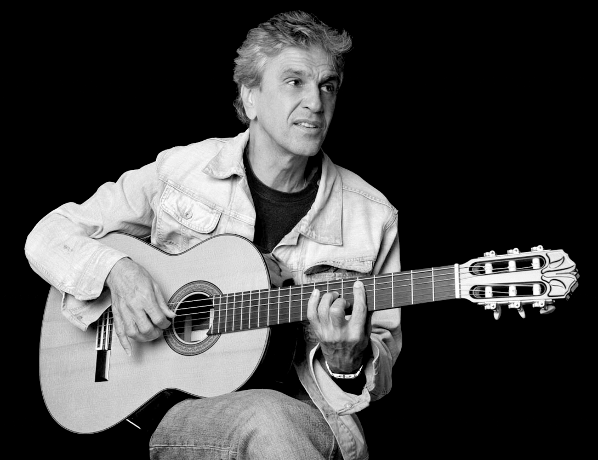

Caetano Emanuel Viana Telles Veloso, born August 7, 1942, better known as Caetano Veloso, is a Brazilian composer, singer, guitarist, writer, and political activist. Veloso first became known for his participation in the Brazilian musical movement Tropicalismo, which encompassed theatre, poetry and music in the 1960s, at the beginning of the Brazilian military dictatorship. He has remained a constant creative influence and best-selling performing artist and composer ever since. Veloso has won nine Latin Grammy Awards and two Grammy Awards. On November 14, 2012, Veloso was honored as the Latin Recording Academy Person of the Year. Veloso was one of seven children born into the family of Jose Telles Velloso (Seu Zeca), a government official, and Claudionor Viana Telles Veloso (Dona Cano), a housewife. He was born in the city of Santo Amaro da Purificacao, in Bahia, a state in the northeastern area of Brazil, but moved to Salvador, the state capital, as a college student in the mid-1960s. Soon after the move, Veloso won a music contest and was signed to his first label. He became one of the founders of Tropicalismo with a group of several other musicians and artists including his sister Maria Bethania in the same period. However the Brazilian government at the time viewed Veloso's music and political action as threatening, and he was arrested, along with fellow musician Gilberto Gil, in 1969. The two eventually were exiled from Brazil, and went to London, where they lived for two years. After he moved back to his home country, in 1972, Veloso once again began recording and performing, becoming popular outside of Brazil in the 1980s and 1990s. You can visit Caetano Veloso offial website here.